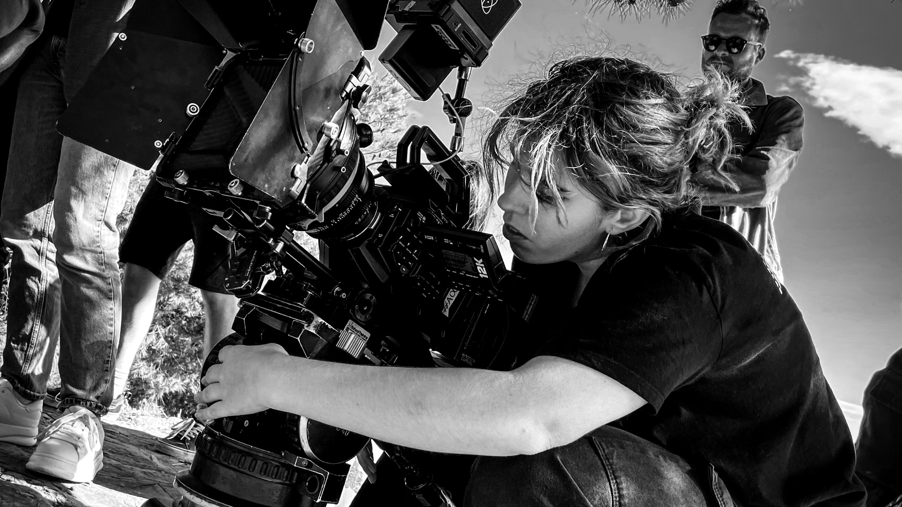

Ver proyecto
Ver proyecto
Waltz to my 宝贝
Dirección de fotografía y etalonaje
NVOH · La Colisión

Sevilla / Málaga · Departamento de cámara
Sobre mí
Graduada en Comunicación Audiovisual por la Universidad de Sevilla y máster en Dirección de Fotografía por School Training, Escuela de Cine y Sonido. Especializada en creación de contenido audiovisual, con experiencia en producción y edición de vídeo, fotografía y contenido para redes sociales.
Organizada, creativa y resolutiva, acostumbrada a trabajar en equipo, adaptarme a distintos proyectos y tomar iniciativa. He pasado por casi todos los puestos del equipo de cámara e iluminación, y esa mirada desde dentro del set es la que traigo a cada proyecto nuevo.
Trabajo seleccionado
Tres de los últimos trabajos en dirección de fotografía. En Proyectos están todos.
Ver proyecto
Dirección de fotografía y etalonaje
NVOH · La Colisión
 Ver proyecto
Ver proyecto
Idea original · Dirección de fotografía
La Colisión
 Ver proyecto
Ver proyecto
Dirección de fotografía y etalonaje
4 fotogramas dentro